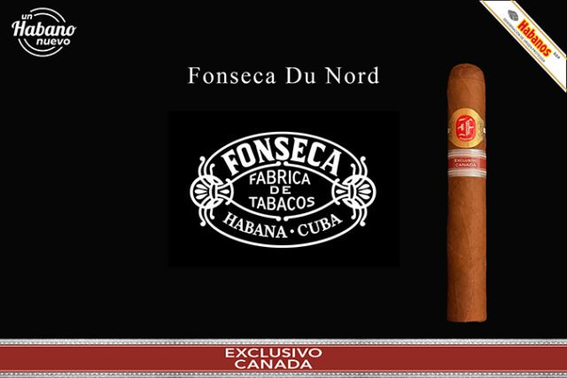

カナダ向けのエディシオン・レヒオナル（地域限定品）「フォンセカ デュ・ノール」が、トロント、モントリオール、ウィニペグ、バンクーバーの4都市で発売されました。ハバノスS.A.の公式発表によるものです。
サイズはヘニオス型（52×140mm）。カナダではプレーンパッケージ（無地包装）法の施行後、地域限定品が出ていませんでしたが、デュ・ノールはその施行後初めての地域限定品となりました。

写真：Habanos S.A. — カナダ向け地域限定「デュ・ノール」
カナダ向けのエディシオン・レヒオナル（地域限定品）「フォンセカ デュ・ノール」が、トロント、モントリオール、ウィニペグ、バンクーバーの4都市で発売されました。ハバノスS.A.の公式発表によるものです。
サイズはヘニオス型（52×140mm）。カナダではプレーンパッケージ（無地包装）法の施行後、地域限定品が出ていませんでしたが、デュ・ノールはその施行後初めての地域限定品となりました。